branch candidate/geiger-visuals-20260925 · base 6b43a52 · work d5c7991, this stamp on top · fable · high · nothing pushed, nothing deployed
Three things you said on Thursday, and what was actually happening on the page. The bars were moving but the rows were not: the player moves every row once a day, all at once, a quarter of a second after the bars have already finished. It ranks by Geiger no matter what the table is sorted on, because the replay overwrites the sort. And the list is long because it is the whole cohort: 43 names, 17 fit, and the ones you cannot see are moved but never animated. Below: the measurements, then three working players on real data, then three working GEIGER tabs for MU. One recommendation at the end. Nothing here is deployed; you pick, and the pick becomes an Opus build.
I ran the shipped board headlessly (no window opened) on the AI HW cohort, pressed PLAY at 1×, and photographed it ten times a second for ten seconds while reading the row positions off the page every 100 ms. Every number here is from that run, not from the code alone.
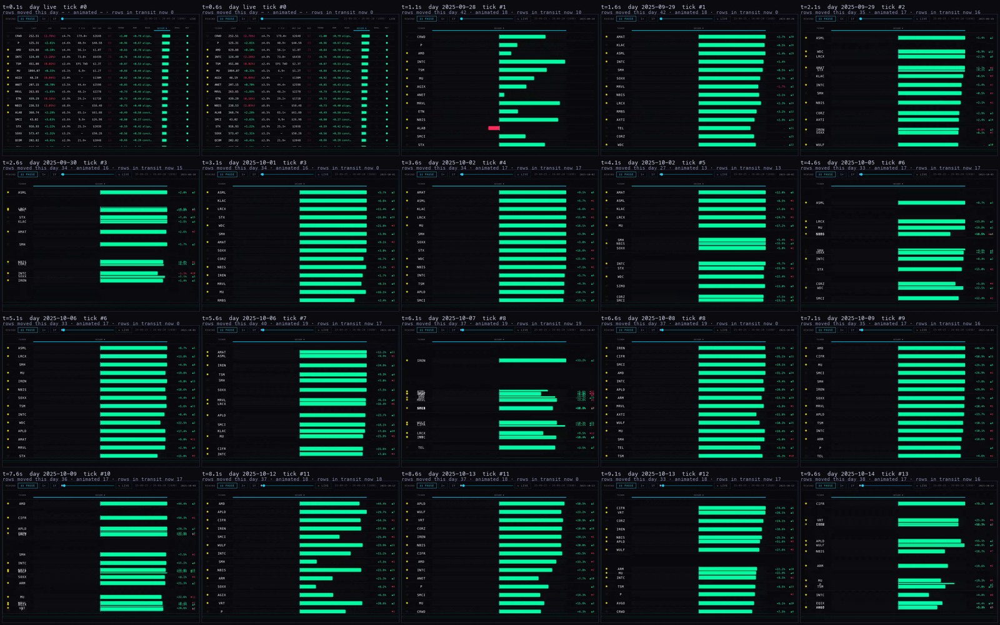
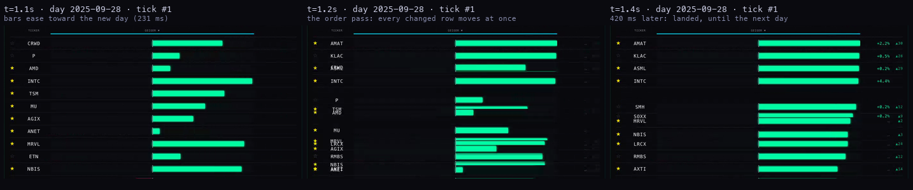
| what you saw | what the page does | where |
|---|---|---|
| "the bars are moving but the positions are not" | Each day (700 ms at 1×) the bars ease over 231 ms. Then, 251 ms after the day starts, ONE order pass moves every row that changed (27 to 42 of 43 per day) in a single 420 ms slide. So positions do move, but as a batch, once a day, after the bars. With the market moving a little every day it reads as bars alive, rows dead. | repaint() → orderPass(), deferred by the settle time (M61 "settle → reflow") |
| "it's in batches, which I don't love" | The batch is by design: "values first, then order" was the proposal's default movement. Rows below the fold are moved but never animated (travel nobody sees), so of 43 rows only the 13 to 19 on screen ever slide. | same order pass; the "off screen = no animation" rule |
| "locked to whatever ranking I had in the table … nothing to do with the table" | Right. While replaying, the page forces the sort to Geiger, descending and restores your sort afterwards. Whatever column the board is on, the player ranks by Geiger. | S.sort={key:"g",dir:-1} inside orderPass() |
| "I don't see a lot of tickers … the list is very long" | 43 names in AI HW; the board box is 585 px tall at 1680, a row is 33 px, so 17 fit and 26 are below the fold. In the frames above only 13 are visible under the transport row. | measured on the page |
| "moving like crazy and the percentages change" | Two things. The % beside the bar is the price change since the first day of the window, so it jumps every day by design. And the bar's width is scaled to the day's biggest reading, not to a fixed scale: on every frame the leader is full width, and in the frame below all 13 visible bars are identical full-width green. The bar carries almost no information at the top of the list. | mx = max |v| per frame; width = |v| / mx |
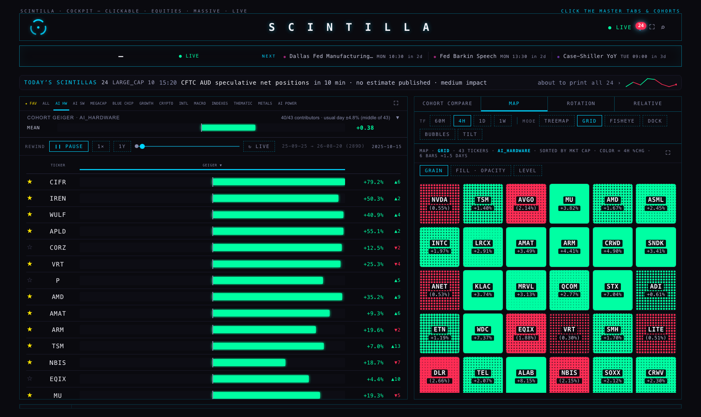
All three run on the same real data: the AI HW cohort (43 names) and your LIKED list (72), Geiger history from fan_daily and momentum_daily blended 0.5 / 0.5 exactly as the board's replay blends them, and daily closes from the chart API. The history the pipeline holds for these cohorts runs 15 July to 20 August 2026, so that is the window every player replays. Each one is a page you can open and run; the transport is the hub's own PLAY, speed chip and scrubber. Monochrome; the only colours are up-green and down-red. Every reading on screen is an interpolation between two real days, advanced every frame: nothing is stepped once a day, so nothing can arrive as a batch.
open A The board's own shape, ticker and one big bar, but three rules changed. Every row glides to its new place the moment it earns it, individually, about half a second per move, never as a group. The rank follows the column you choose, Geiger, day move, move versus its usual day, % over the span or market cap, so it is the table's sort, not a private one. And the list is cut to what fits: what does not fit folds under "+N more" with the next three names, and a name that climbs into the visible set slides up out of the fold. The bar is on a fixed ±1 scale, so a full bar means a full reading, not "the biggest today". Near-ties hold: a name has to be clearly past its neighbour before it overtakes, so rows rest instead of jittering.
What it shows that the table cannot: who is overtaking whom, right now, as one movement you can follow with your eye.
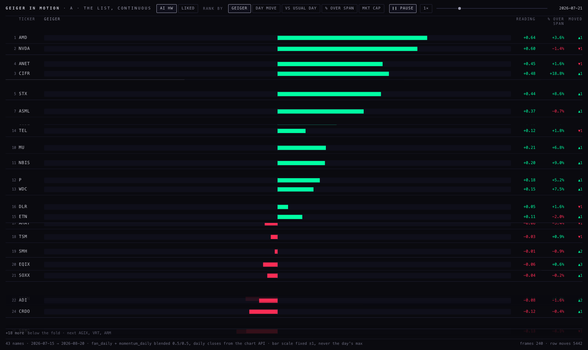
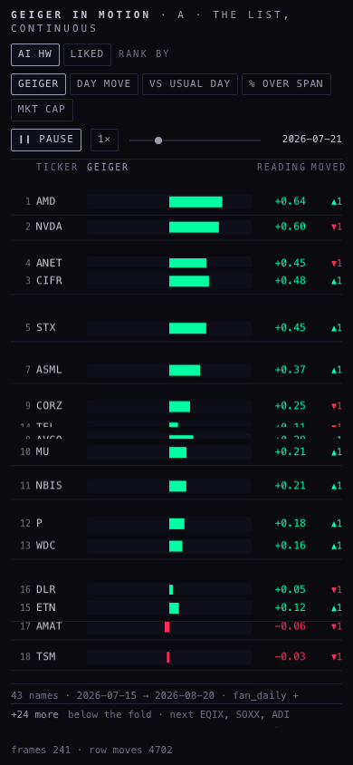
open B No list. Each name is a dot: across is today's move measured in its own usual days (a +2 means it moved twice what it normally moves), up is the Geiger reading, size is market cap. The "3D" you asked for is depth by liquidity: the thin names sit back, smaller and dimmer, the deep names in front. As the day unfolds the dots drift, each dragging a short tail so you can see the direction of travel in a still. Hover names it and gives the numbers. The quadrants are labelled in words: up more than usual with a bull reading, down more than usual with a bear reading, and the two disagreements.
What it shows that the table cannot: the whole cohort at once, and whether today's move agrees with the reading, in one glance instead of forty rows.
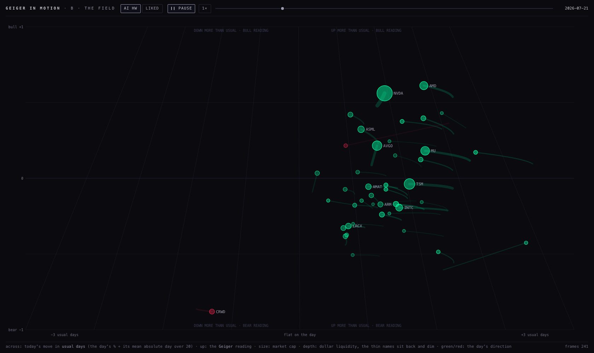
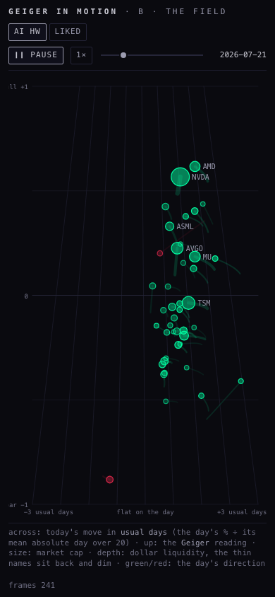
open C My third. Time runs across; each name is a line of its rank through the window, drawn only up to the day on the clock, green where its reading is above zero and red below. The column at the right is the standings now, and it slides as the day unfolds, one slot per name, folded after what fits. Hover a name to follow it. The rank follows the same column choice as A.
What it shows that the table cannot: the path. A name that has climbed steadily for two weeks and one that jumped today look the same in a list; here they are two different lines.
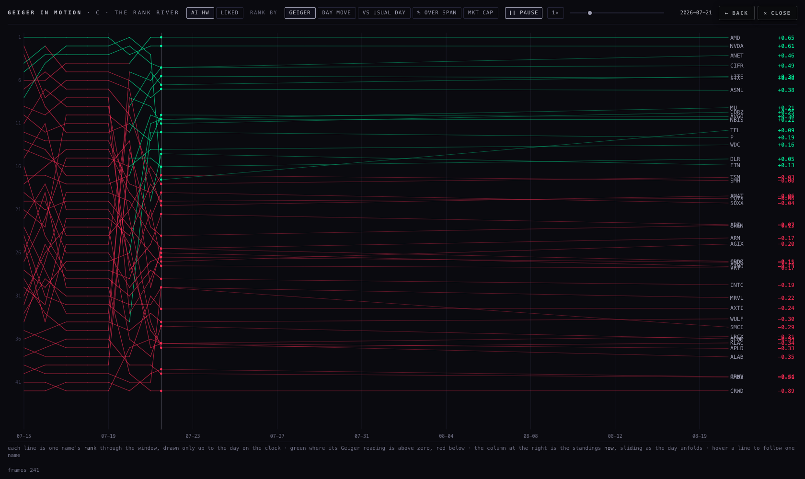
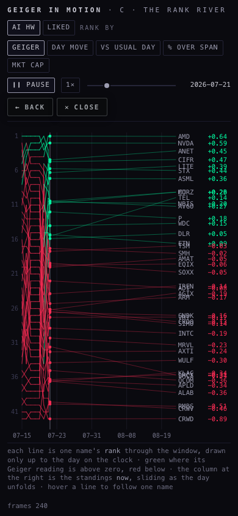
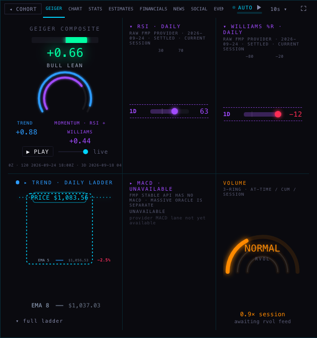
In plain words, what is wrong with it. Six boxes, and three of them say they have nothing: MACD "unavailable", the volume rings "awaiting rvol feed", the trend ladder an empty dotted frame with two moving-average labels. The two boxes with a reading show one number each, the daily RSI and the daily Williams, in purple and red, against your rule. The ring at the top draws the same two numbers that are printed in text beside it. The eight timeframes your Equalizer is built on are not on the tab at all, except as a line of tiny grey text under the ring ("BAR AS-OF · 12H 2026-09-24 …"), and nothing on the tab says whether +0.66 is high or low for MU, or what pushed it there. The space is spent on frames, not on the reading. Your word for it was "dead", and by these measures it is.
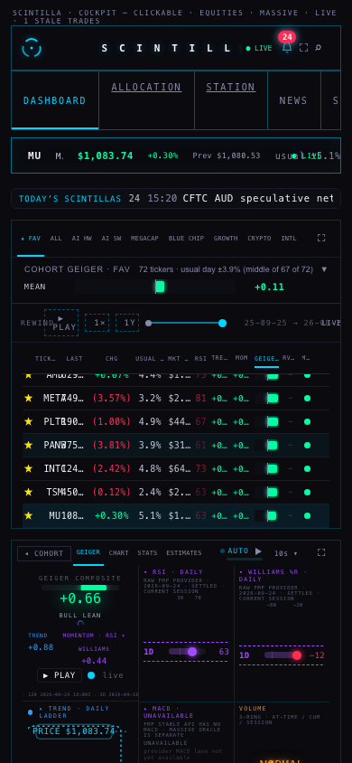
The three mockups answer one question in three ways: what is a Geiger reading for, on one company? Each carries the same facts from the same source: the composite now (+0.66, bull lean, artifact of 24 Sep), its trend and momentum, the eight rungs of your saved Equalizer with their weights and each rung's own reading, RSI and Williams per rung, and the composite's own history so "now" has a context. Each is built for the panel (609 × 632), for EXPAND (I used 898 × 708, see the note below) and for the phone (340 × 300), and each plays: the history replays through the hub's transport with the same settle motion as the board.
open A The composite big at the top, then the eight rungs as eight rows, 2H down to 1W: the weight you gave the rung, a bar of the rung's own composite, a tick for its trend and a tick for its momentum, and its RSI and Williams. You can see at once where the timeframes agree and where they do not (for MU today: every rung bull, the 4H and 1D strongest, the 6H the weakest; the 1D and 3D Williams already in the overbought band, in red). In EXPAND each rung gains its last 60 bars with the fan the artifact reports now as a grey band at the right.
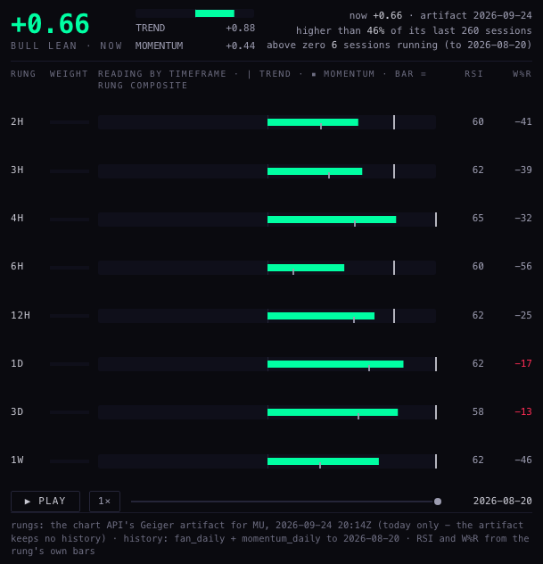
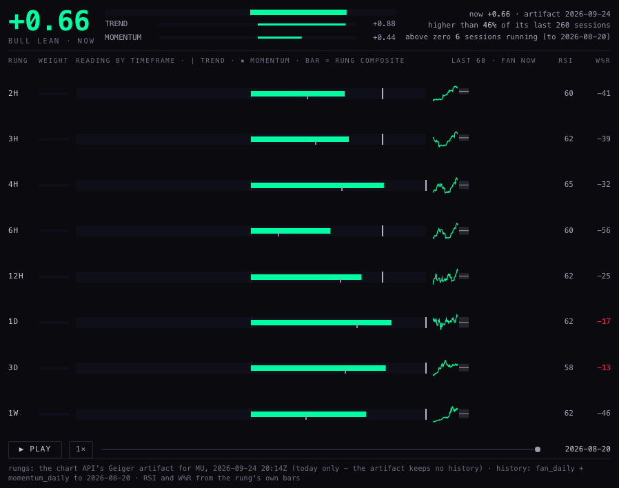
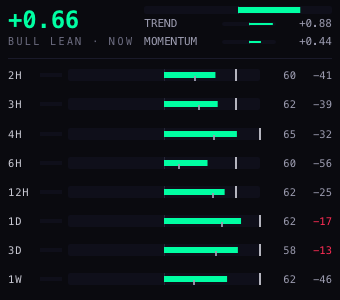
open B The composite as a line over its last 260 sessions, filled green above zero and red below, with trend and momentum as thin lines of the same rule, and the "now" point. Two sentences above it say what the number means for this company: higher than 46 % of its last 260 sessions, and above zero for 6 sessions running. Beside it the eight rungs now, and under it "what carries it": each rung's weight times its reading, ranked, so you can see the 1D, 12H and 3D are doing the lifting and the 2H hardly counts. The line reveals itself as you play.
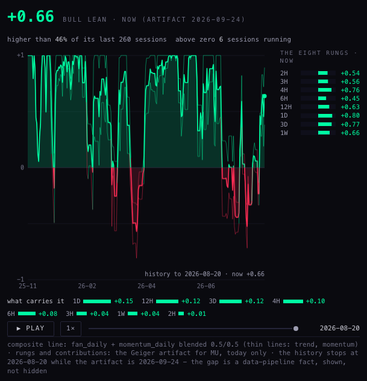
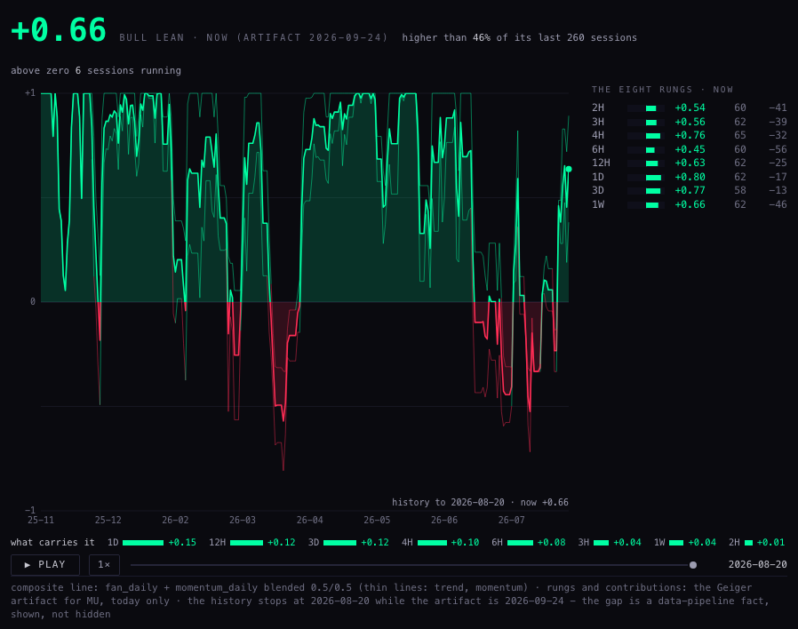
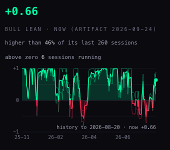
open C Trend across, momentum up. The composite is the diagonal, so distance from the bottom-left corner is the reading. The company's last 60 sessions are a trail on this plane, fading into the past; the now point sits at the end of it; and the eight rungs are dots around it, sized by weight, so the spread of the timeframes is visible as a shape rather than a list. For MU today the rungs sit tight in the top-right, all bull, the 6H a little lower on momentum. EXPAND adds the rung table.
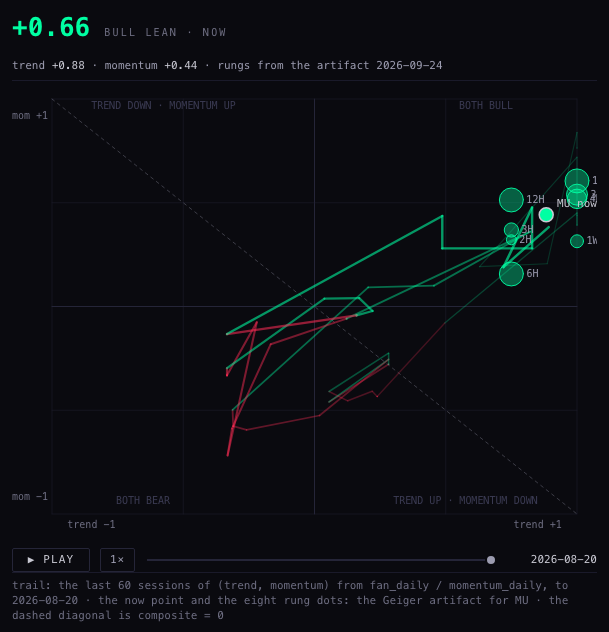
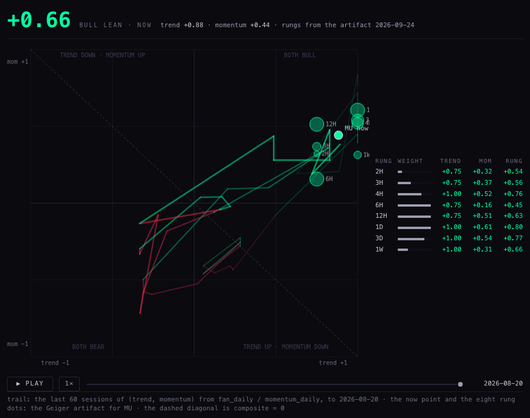
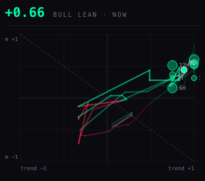
Measured the same way for every page: headless Chromium, the page playing at 1×, and the browser's own main-thread task time read before and after 60 seconds (30 for the tabs, scaled to a minute). The shipped player was measured with the same method in the same session, on the same cohort, so the rows compare like with like. The 1.90 figure recorded for the flashes after M72 came from a different bench and is not on this table.
| page | size | CPU-seconds per minute | of which script | layout + style | frames per second |
|---|---|---|---|---|---|
| measuring … | |||||
Three things the table says. Every player costs about half of the shipped one while playing (5.3 to 5.5 CPU-seconds a minute against 9.0), and each one is at 60 frames a second, because the rows move by transform only and the two canvas views redraw only what changed. The rank river cost 11.2 before I cached its past: a first version redrew every line every frame; now the days already played live on a hidden layer and only the moving edge is drawn. At rest, all six cost nothing: the frame loop stops when nothing is moving, so a tab left open on a company page does no work until something changes. Tab B is the dearest tab while replaying (6.0 a minute, the 260-session line is refilled each frame); the same past-on-a-layer trick would bring it under 2 if it is picked.
Ship A as the player, and B as the second view behind one chip.
A is the board you already read, with the three faults removed: rows move one at a time and the moment they earn it, the rank is the table's own sort, and the list is what fits. It costs less than the shipped player because it moves 20 rows by transform and never touches layout. It is the smallest change to what you know, and it answers all three of Thursday's complaints directly.
B is the "cleaner, more 3D" view you asked about, and it is the one that shows something the table cannot: the whole cohort at once, with today's move against the reading. It should be a chip beside the player ("FIELD"), not a replacement, because a field is worse than a list the moment you want a specific name.
C is honest and cheap, but it is a chart to study, not a player to watch; keep it in the drawer for a REPLAY room if one comes.
For the tab, B. It is the only one of the three that says what +0.66 means for MU in words ("higher than 46 % of its last 260 sessions"), it keeps the eight rungs on screen at every size, and the history line is the same motion theme as the board's replay. Fold Tab A's ladder into its EXPAND mode: the rung rows with the ticks are the best single view of the Equalizer, and EXPAND has the room.
fan_daily holds the AI HW and LIKED names only to 2026-08-20 (after that, 22 names a day across the whole universe). So every player replays 15 July to 20 August, and in the tabs the "now" (the chart API's artifact of 24 September) sits 24 sessions after the last point of the line. The pages say so on their footers rather than hiding it. It is the same pipeline fact the 24 September replay write-up recorded.6b43a52). The widest the company rail reached in any state I could measure was 898 × 708, so that is the EXPAND size the mockups are built for. If P3 lands wider, the pages are fluid and will use it.index.html. The player and the tab on the hub are exactly as they were. No deploy, no push.prototypes/indicator-lab/ untouched.